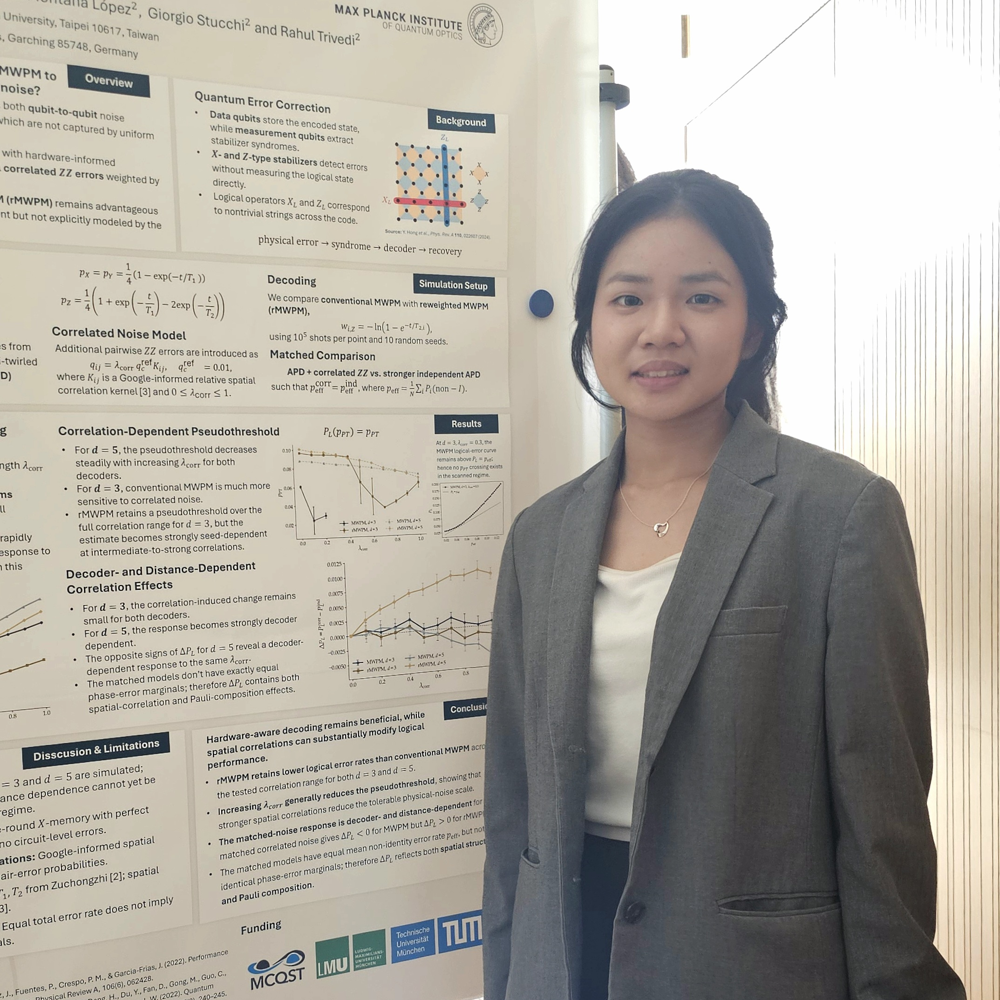

Wei-Hsuan Chung 鍾瑋軒
About Me
I am a senior undergraduate at National Taiwan University pursuing a B.S. in Physics with a double major in Sociology. My research interests span theoretical quantum optics and quantum information, particularly open quantum systems, waveguide QED, non-Hermitian dynamics, and quantum error correction. I work with Dr. Hsiang-Hua Jen at Academia Sinica on theoretical modeling and numerical simulations, and my current 8-week research internship is with Dr. Flore Kunst’s group at the Max Planck Institute for the Science of Light.
Education
- National Taiwan University — B.S. candidate in Physics; double major in Sociology · Sep. 2023–Jun. 2027 (expected)
- CGPA: 3.99/4.30
- Completing the Quantum Computing and Information Program